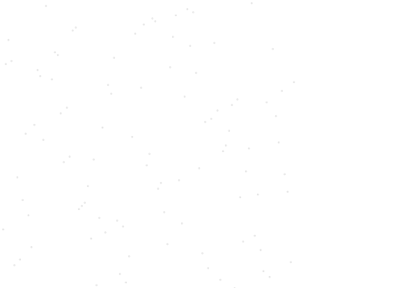
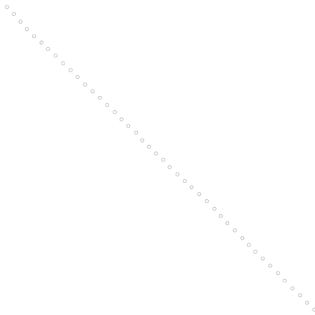

位置が重ならない点集合を取得
実行例
 実行結果を見る
ソースコード
解説/アルゴリズム

for (let i = 0; i < num; i++) {
// min～(min+length)空けて配置していく
point.x += p.random() * length + min;
point.y += p.random() * length + min;
points.push({ x: point.x, y: point.y });
}
他の点と被らない程度の一定間隔おきに点を配置していきます。

for (let i = 0; i < num; i++) {
const src = points[i].y;
const destIndex = p.floor(p.random(num));
const dest = points[destIndex].y;
points[i].y = dest;
points[destIndex].y = src;
}
全ての点の y の値をランダムに入れ替えれば完成です。
（x の値でもよい）